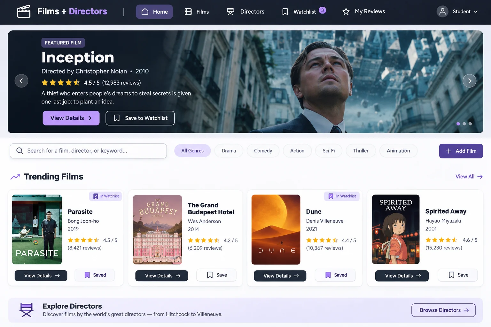
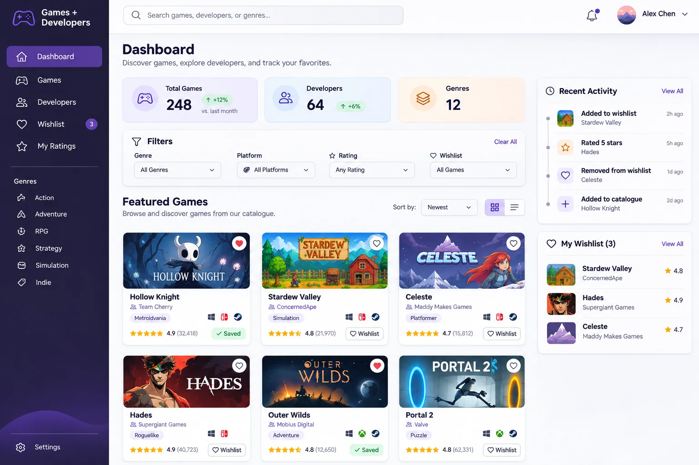
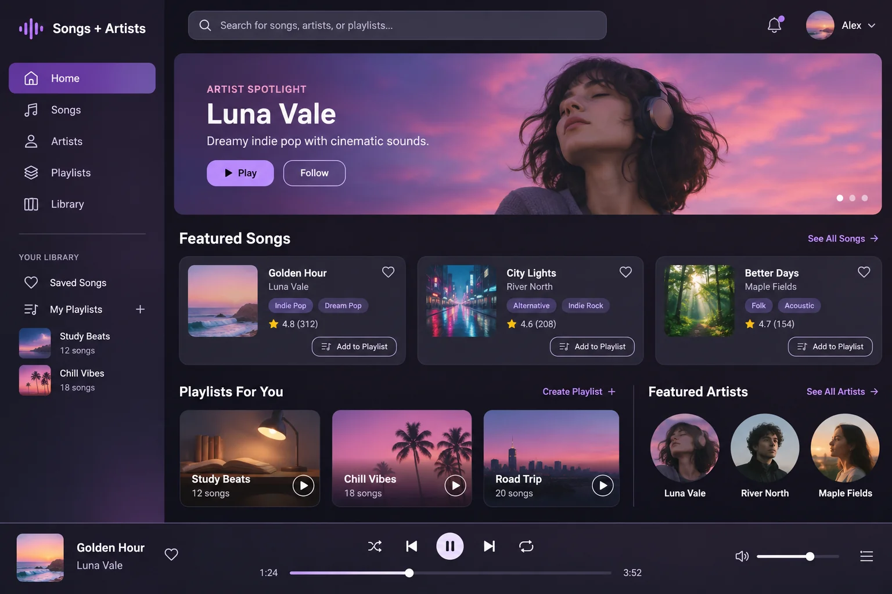

← Learning Lab / Beyond the Template
ASSIGNMENT 2 · DESIGN INSPIRATION
Beyond the Template
You've built Book Reviews. Your own application can be visually and functionally different, even when it uses the same Laravel ideas: models, relationships, controllers, Blade views and authentication.
FILMS + DIRECTORS
Films: turn a catalogue into a discovery experience
Full-width featured film, compact film cards, horizontal navigation, watchlist and genre filters.

Open full-size mockup ↗What changed from Book Reviews?
- Navigation: A horizontal nav with Home, Films, Directors, Watchlist and My Reviews. Keep existing route names where possible.
- A different layout: Show a featured film at the top, then smaller poster-led cards with ratings rather than three identical book cards.
- Achievable features: A watchlist based on the Reading List pivot, and genre filtering based on the Search lesson.
How could you build it?
- Display a featured film — Fetch a record in your controller, pass it to the Blade view, and display its poster, title and director in a dedicated hero section. No carousel needed.
- Filter by genre — Add a genre query parameter, validate it, then add a conditional `where()` to the existing Eloquent query.
- Rename the reading list — Adapt the existing save/remove routes and relationship as a Watchlist, rather than building another system from scratch.
GAMES + DEVELOPERS
Games: create a personalised library dashboard
Left sidebar, summary figures, filters, game cards and personal wishlist.

Open full-size mockup ↗What changed from Book Reviews?
- Navigation: Use a fixed desktop sidebar for Dashboard, Games, Developers, Wishlist and My Ratings; collapse it on mobile.
- A different layout: Open with summary numbers, then a filter panel and game-card grid with artwork, platforms and ratings.
- Achievable features: Filter by platform, show a player wishlist, calculate totals using Eloquent and display recent additions.
How could you build it?
- Build dashboard totals — Pass counts such as `Game::count()` and `Developer::count()` to a new dashboard Blade view.
- Add platform badges — Display an existing platform field, or add one if your project needs it. Different data can be shown through conditional Blade styling.
- Create a wishlist — Reuse the Reading List relationship for authenticated users, with save/remove controls on each game card.
SONGS + ARTISTS
Music: build a library around listening and collecting
Dark sidebar, artist spotlight, song lists, saved songs and playlists.

Open full-size mockup ↗What changed from Book Reviews?
- Navigation: A library sidebar with Home, Songs, Artists, Playlists and Saved Songs.
- A different layout: Artist spotlight, smaller horizontal song cards, artwork and a playlist section, with a distinct dark visual style.
- Achievable features: Favourite songs, playlists and genre tags; a working audio player is an optional advanced project.
How could you build it?
- Spotlight an artist — Pick an artist and pass the record, image and associated songs to a dedicated home view.
- Save favourite songs — Adapt the Reading List save/remove pattern to songs. Scope the list to `auth()->user()`.
- Add playlists — If you have time, use a many-to-many relationship between playlists and songs. Start with one playlist before attempting a full player.
YOU ALREADY KNOW MOST OF THE BUILDING BLOCKS
Connect the design to what you have learned
Edit resources/views/layouts/navigation.blade.php and related Blade layouts. Test mobile navigation too.
Pass a selected record to a Blade view and make a distinct hero section for it.
Adapt the Learning Lab search lesson with an extra query parameter and Eloquent where().
Reuse the Reading List extension's user-to-item relationship, with save/remove actions.
Use Eloquent count() and avg() to present useful summaries, rather than just another list.
Modify your existing Blade card partials, Tailwind classes and rating-star component.
A SMALL CHALLENGE FOR YOUR OWN PROJECT
Make two deliberate changes
- One design change: navigation, homepage, layout or a record-detail page that suits your subject.
- One useful feature: a filter, personal collection, dashboard statistic or another meaningful user action.
- Explain your choices: who benefits, what changed, which Laravel concepts you reused and how you tested it.
Start with a sketch. Keep your existing working functionality. These are suggestions, not extra assessment requirements.
Explore optional extensions →